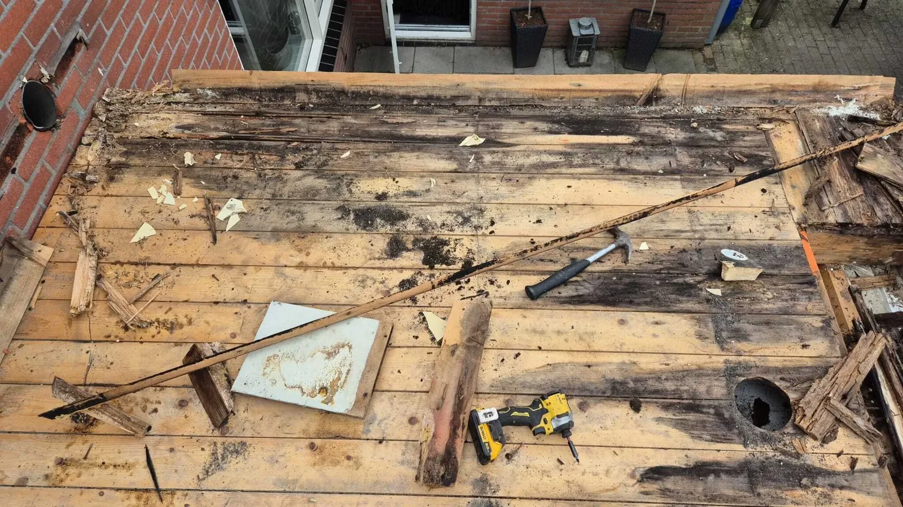
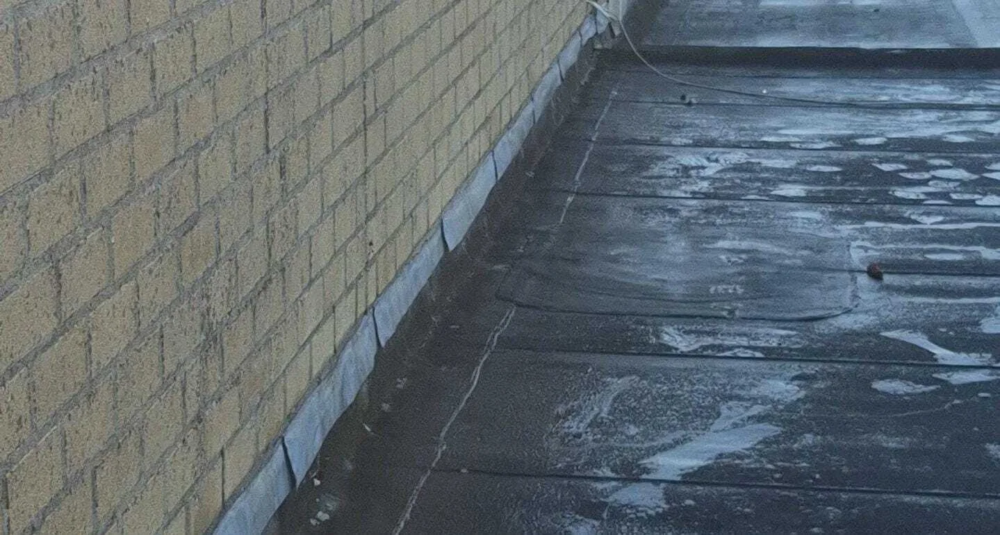
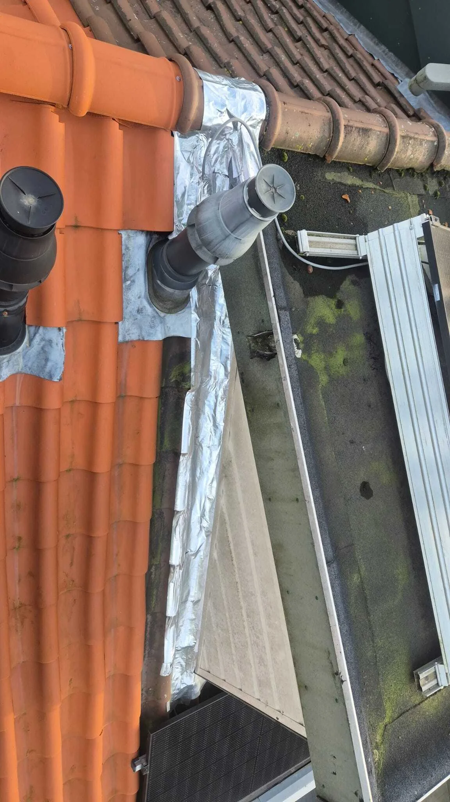
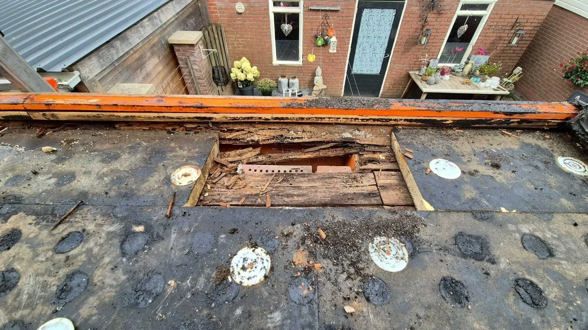
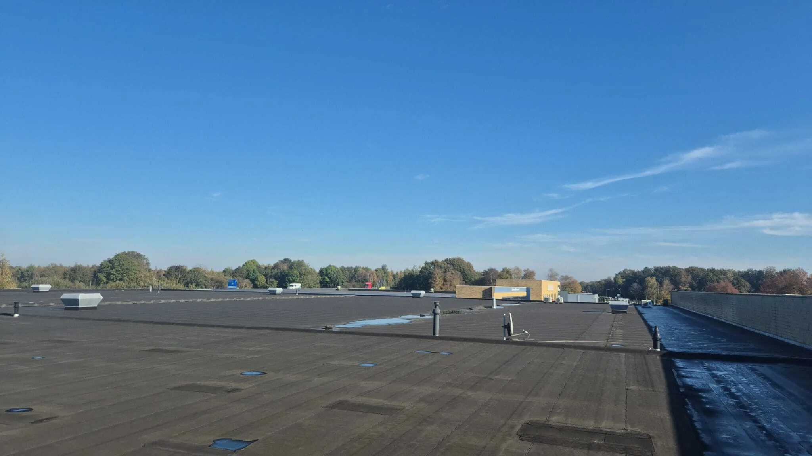

Cluster 21
Terugkerende lekkages
Een thematische kennisbanksectie met een pillarpagina en ondersteunende artikelen. Begin bij de hoofdpagina voor overzicht, of kies direct het specifieke onderwerp dat past bij uw situatie.

Artikelen in dit cluster
De pillar pagina geeft het overzicht. De ondersteunende blogs behandelen deelvragen, signalen, kosten, risico's en praktische keuzes.

Daklekkage verplaatst zich? Zo kiest water een andere routeOndersteunende blog
Oude dakreparatie? Zo ontstaat juist nieuwe lekkageOndersteunende blog
Waarom dakreparaties vaak maar tijdelijk helpenOndersteunende blogWaarom daklekkages blijven terugkomen (en hoe je dat doorbreekt)Pillar pagina
 Daklekkage gevonden maar niet opgelost? Dit is waaromOndersteunende blog
Daklekkage gevonden maar niet opgelost? Dit is waaromOndersteunende blog

Daklekkage na jaren terug? Dit is de redenOndersteunende blog
Daklekkage geen detailprobleem? Dit speelt er echtOndersteunende blog